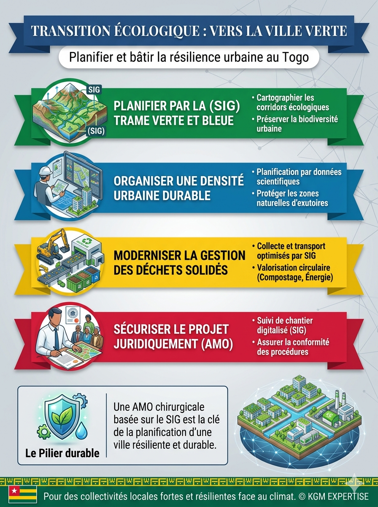

Analyse | 06 Mai 2026
Vers la Ville Durable Togolaise : Un Impératif au-delà du Concept
Le Togo s'engage vers la « Ville Durable » sous l'impulsion du PNUD et de l'AFD. Selon Saskia Sassen, une ville durable est une cité capable de métaboliser ses propres déchets. Aujourd'hui, nos communes croulent sous les immondices qui bouchent les exutoires, aggravant les inondations (Source: Vert-Togo).
De la ville grise à la ville verte

KGM EXPERTISE accompagne cette mutation en proposant une planification basée sur la Trame Verte et Bleue. Grâce au SIG, nous optimisons les flux de collecte des déchets et identifions les sites de valorisation circulaire. Passer de la consommation à la planification est le seul moyen d'éviter l'asphyxie urbaine de nos cités en pleine croissance.
Par KODOMMA Gnimdou M., gestionnaire des collectivités locales & Expert SIG.